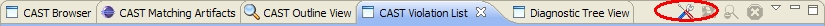
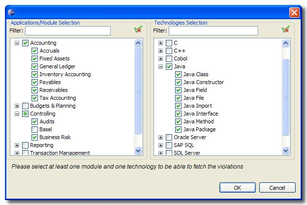
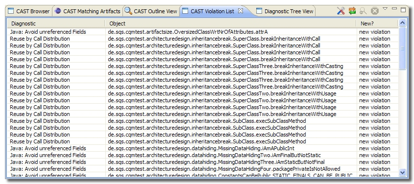

How to select the Applications/Modules and Technologies
The first thing you should do prior to fetching the
violations is to filter the violations that you want to see listed in the
CAST Violation List. This is so that you do not fetch
ALL the violations that have been flagged in the Central as some may not be
related to your application, module or technology and therefore may not be of
interest.
- In the CAST Violation List, select the
button:

- This will launch the Fetching Parameters dialog box in which you
have to select both Applications/Modules and Technologies as
defined during the code analysis phase:

- Select the Applications/Modules and Technologies that you
require (you must select Applications/Modules AND Technologies). Selecting
nothing will cause the OK button to be disabled.
- Click OK when you are satisfied with your choices.
- The
CAST Violation List will then automatically display all the violations that
match the criteria you selected:

 Notes
Notes
- Note that you can modify the violation filter at anytime using the
button
in the CAST Violation List.
- Please also remember that only Quality Rule based violations will be fetched
into the CAST Violation List and not metric based violations.